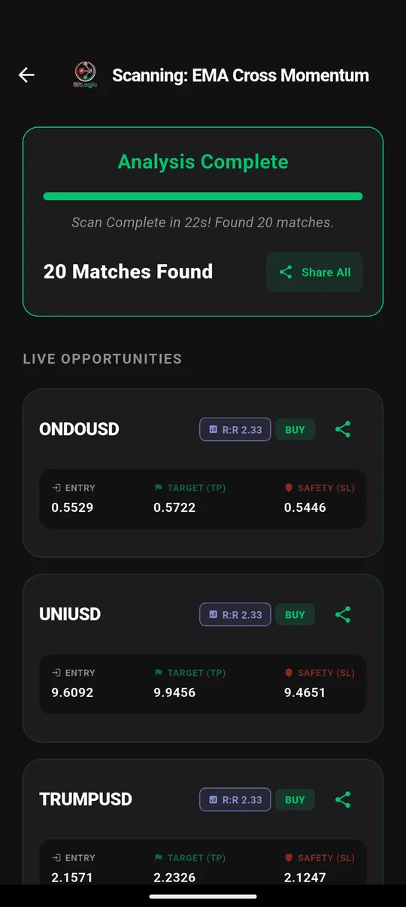
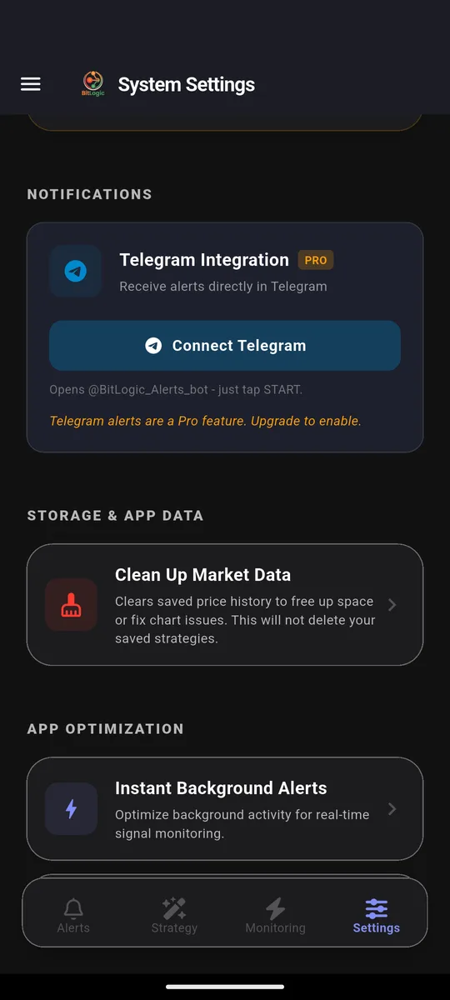

Bitstamp Screener: Technical Alerts on a Regulated Spot Exchange
Quick answer: Bitstamp is one of the few exchanges licensed in the US, the UK and the EU (under MiCA), and it is now owned by Robinhood. It is built for buying, selling and charting one market at a time, and it doesn't include a screener that checks every pair against a technical rule. BitLogic does: in a test on 26 September 2026 it checked all 124 Bitstamp pairs in 22 seconds and found 20 matches.
BitLogic is a no-code crypto screener and alert app for Android and Windows, with a free web screener. It scans every pair on an exchange against rules you build and sends matches as push notifications, or as Telegram messages on Pro.
Features, availability and test results checked 26 September 2026.
Why Screen Bitstamp Specifically?
Most screeners default to Binance-style markets with hundreds of perpetual contracts. Bitstamp is a different kind of venue:
- Spot only. No leverage and no liquidation cascades. Signals come from real buying and selling.
- Regulated where you live. It is licensed in the US, registered with the FCA in the UK, and holds a MiCA licence from Luxembourg's CSSF covering the EU.
- A focused list. Around 124 pairs, not 600. A rule can check the entire exchange in well under a minute.
- Robinhood's crypto venue. Robinhood bought Bitstamp in 2025, and since August 2026 Robinhood's UK app routes crypto trading through it (Robinhood announcement).
If you hold coins on Bitstamp, you want signals from Bitstamp's own prices, not from a derivatives exchange you don't use.
Can You Use Bitstamp in Your Country?
| Country | Bitstamp status |
|---|---|
| United States | Available in most states |
| United Kingdom | Available. FCA-registered; powers Robinhood UK crypto trading |
| Germany | Available. MiCA-licensed (CSSF Luxembourg) |
| Canada | Not available since January 2024 |
| Australia | Check Bitstamp's supported-countries list before signing up |
How to Screen Bitstamp in BitLogic
Step 1: Select Bitstamp
In the Strategy tab, choose Bitstamp. It is a spot-only exchange, so the market is set to Spot.
Step 2: Build or load a rule
This test used a trend stack: EMA 9 above EMA 21, EMA 21 above EMA 200, and volume above its 20-candle average, all on 1-hour candles. Every condition must be true for a pair to match.

Step 3: Scan all of Bitstamp

Every match shows an entry price, a take-profit and a stop-loss, based on the percentages you set in the strategy.
Step 4: Let it watch for you
Live Monitoring re-runs the same strategy in the background (every 1, 5, 15 or 30 minutes, every 1 or 4 hours, or once a day) and notifies you when a new pair matches, even with the app closed. You can monitor up to five strategies at once. On Pro, the same alerts also go to Telegram: tap Connect Telegram, press Start in the bot, and you are done.

Screen Bitstamp free on Google Play, or on Windows.
The Test: All of Bitstamp in 22 Seconds
| Setting | Value |
|---|---|
| Market | Bitstamp Spot, 1-hour candles |
| Rule | EMA 9 > EMA 21 > EMA 200, volume above average |
| Pairs checked | 124 (the whole exchange) |
| Time | 22 seconds |
| Matches | 20, including ONDO, UNI and TRUMP |
A small exchange scans fast. You can re-check all of Bitstamp every few minutes without waiting.
These are scan results, not recommendations. A match means a pair met the rule at that moment, nothing more.
Rules That Suit a Spot Exchange
Without leverage, spot traders tend to hold for longer and care more about trend and value zones. Three rules built for that:
1. Buy the dip inside an uptrend
IF RSI(14) [4h, Last Closed] Is Less Than 40
AND Close [1d] Is Greater Than EMA(50) [1d]This finds a short-term pullback while the daily trend is still up. Use Multi-Timeframe mode to mix the 4-hour and daily candles.
2. Daily golden cross
IF EMA(50) [1d, Last Closed] Crosses Above EMA(200) [1d]This fires rarely, and that's the point. It is a long-term trend signal worth being woken up for.
3. Accumulation on rising volume
IF OBV [1d, Last Closed] Increased by % 5
AND Close [1d] Is Greater Than SMA(20) [1d]On-balance volume jumped on the day while price holds above its 20-day average.
Bitstamp Timeframes in BitLogic
| Market | Timeframes |
|---|---|
| Bitstamp Spot | 1m, 3m, 5m, 15m, 30m, 1h, 2h, 4h, 6h, 12h, 1d, 3d |
Bitstamp is one of the few exchanges with 3-day candles, useful for slow trend rules.
FAQ
Does Bitstamp have a screener?
Bitstamp offers charts and price data for individual markets but no screener that checks every pair against a technical rule. BitLogic adds that by scanning all of Bitstamp's roughly 124 pairs.
Is Bitstamp regulated?
Yes. Bitstamp operates regulated entities in the US and the UK, and holds a MiCA licence from Luxembourg's CSSF that covers the EU. It is owned by Robinhood.
Can BitLogic scan Bitstamp futures?
No. BitLogic supports Bitstamp spot markets only.
Does BitLogic need my Bitstamp API key?
No. BitLogic reads Bitstamp's public market data and never places trades.
How often can BitLogic check Bitstamp?
Live Monitoring can re-run your rule every 1, 5, 15 or 30 minutes, every 1 or 4 hours, or once a day, in the background, and alert you when a new pair matches.
The Bottom Line
Bitstamp is where many regulated traders in the US, UK and EU keep their spot holdings. A screener turns Bitstamp's focused market into one list you can check in seconds, and Live Monitoring checks it for you.
Download BitLogic free on Google Play and scan all of Bitstamp in under a minute.
Nothing here is financial advice. Exchange availability changes, so check Bitstamp's terms for your country.